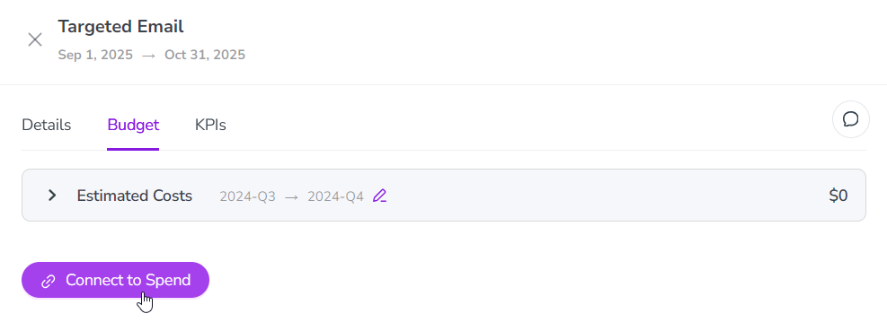
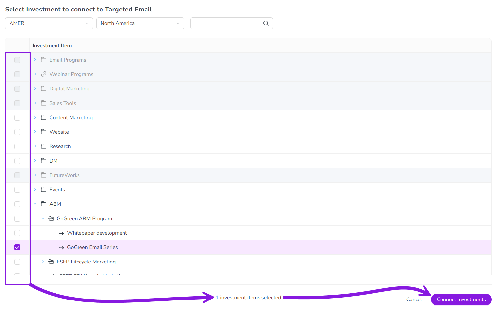
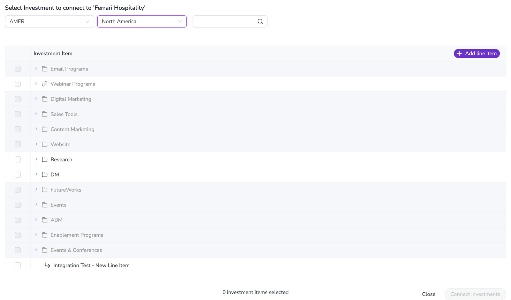
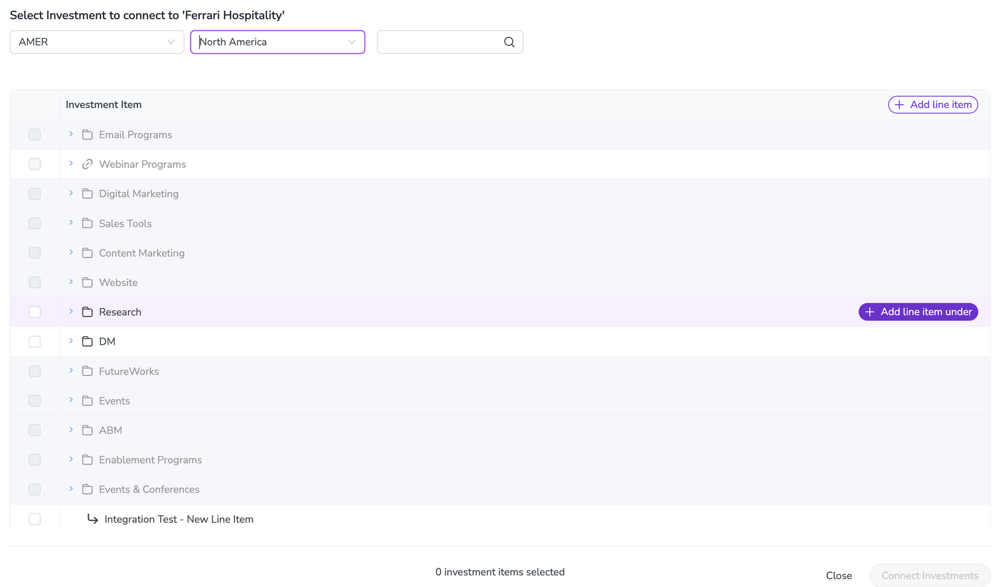
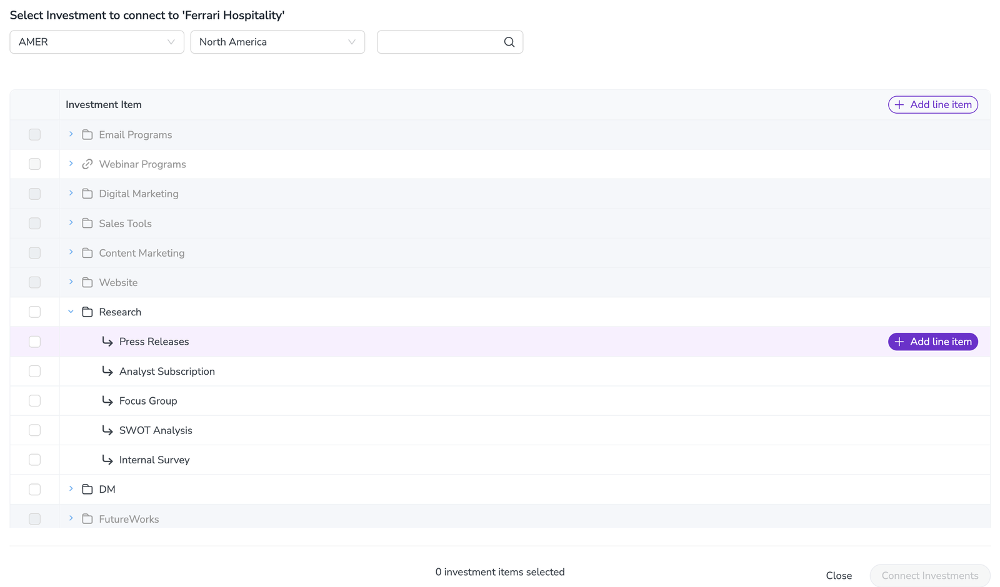
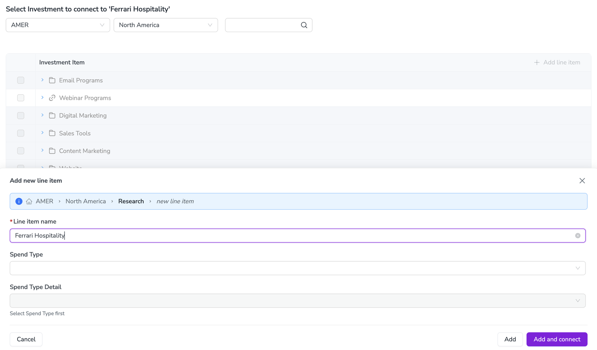
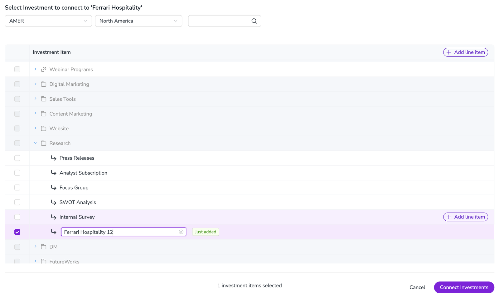
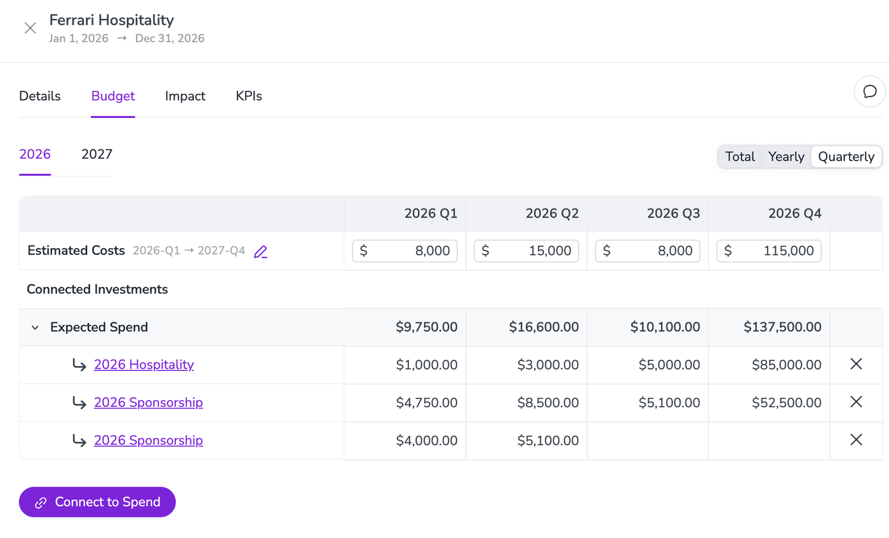

Connect investments to track activity funding
To represent how the activities in your marketing plan are funded, you can connect investments in Uptempo Financial Management to the marketing activities they are intended to fund.
You can:
Connect activities at any level of the activity hierarchy to investments (but your administrator may restrict connections to only certain activity types).
Connect activities to one or multiple investments, at any level of the investment hierarchy (category, sub-category, or line item).
Create a new investment line item while you connect an activity, if the line item you need doesn't exist yet.
To prevent connections between activities and investments that would cause conflicts or are otherwise not valid, the system automatically enforces a set of rules for making connections. To learn more about these rules, see Rules for connecting investments.
Connect an activity to an investment
In the
 Activities section, find the activity you want to connect to an investment in the activity hierarchy panel. Click on the activity's name to open its details panel.
Activities section, find the activity you want to connect to an investment in the activity hierarchy panel. Click on the activity's name to open its details panel.Click on the Budget tab section in the details panel.
Click Connect to Spend.

In the Select Investment to connect to... dialog, use the Select Budget menus to choose the budget you want to use. The Investment Item list is displayed that shows available investments in the selected budget.
In the Investment Item list, use the checkboxes to select an investment you want to connect. If needed, you can select multiple investments. If the line item you need doesn't exist yet, see Create a line item and connect it to an activity.
Click Connect Investments to connect the selected investments to the activity:

The Select Investment to connect to... dialog closes, and you are returned to the Budget tab section of the activity's details panel.

The selected investments are now connected to the activity, and you can view and track investment data for the activity. For details, see Track and analyze activity budgets.
Create a line item and connect it to an activity
If the line item you need doesn't exist yet, you can create it in the Select Investment to connect to... dialog. You don't need to leave the activity to add it in the Investments section.
In the
Activities section, find the activity you want to connect to an investment in the activity hierarchy panel. Click on the activity's name to open its details panel.Click on the Budget tab section in the details panel.
Click Connect to Spend.
In the Select Investment to connect to... dialog, use the Select Budget menus to choose the budget that the new line item belongs to.
Choose where to add the line item. You can start from three places in the Investment Item list:
The list header: Click Add line item in the header row. The line item is created at the top level of the investment plan, next to the categories. Use this option when the plan has no categories yet.

A category: Hover over a category, and then click Add line item under. The line item is created inside that category.

A line item: Hover over a line item, and then click Add line item. The new line item is created at the same level, in the same category.

In the Add new line item dialog, check the path at the top. It shows where the new line item is created.
In Line item name, enter a name. The name is pre-filled with the name of the activity.
If your organization requires more information for line items, complete the additional fields. For example, if Spend Type is required, select a value, and then select a value in Spend Type Detail. Spend Type Detail is available after you select a Spend Type.

Choose how to save the line item:
Click Add and connect to create the line item and connect it to the activity in one step. This option is available only when no other investments are selected in the Investment Item list.
Click Add to create the line item without connecting it yet. The line item appears in the Investment Item list, selected and marked Just added. If you selected other investments before you created the line item, Add is the only option. Select any other investments you want to connect, and then click Connect Investments to connect all selected investments at once.



The new line item is created and connected to the activity. Line items that you create this way start with no funds assigned. To allocate specific amounts, go to the Investments section during investment planning.
Disconnect an investment from an activity
If you want to make changes to how your activities are funded, you can disconnect investments from activities.
In the
Activities section, find the activity you want to connect to an investment in the activity hierarchy panel. Click on the activity's name to open its details panel.Click on the Budget tab section in the details panel.
Click on any of the spend data sections to expand it and view the connected investments.

In the expanded spend data section, click Disconnect on the investment you want to disconnect.
Review the information in the confirmation dialog to ensure you understand what will happen when you disconnect the investment. To finish the disconnection, click Disconnect Activity.

The investment is disconnected with immediate effect, and is no longer listed on the Budget tab section of the activity's details panel.